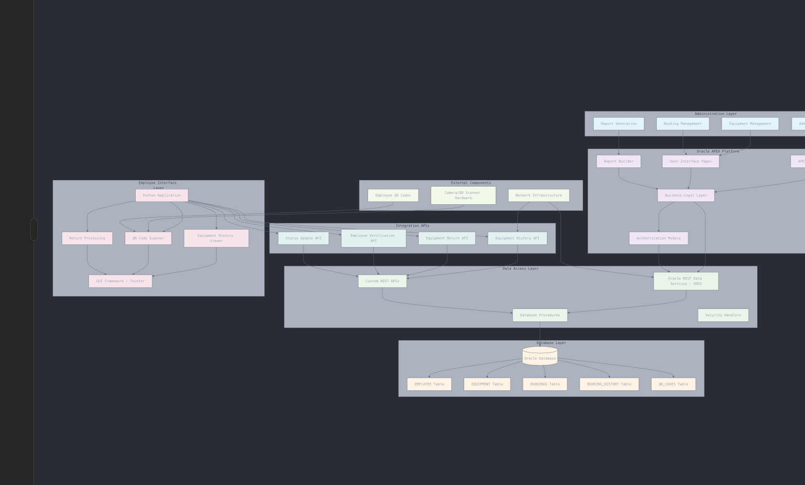

The Employee Management Platform represents a full-stack enterprise solution engineered for scalable workforce administration and resource optimization for TechInnovators Inc. The system integrates a modern cloud-native architecture with enterprise-grade Oracle backend services to deliver comprehensive employee authentication, equipment lifecycle management, and intelligent booking workflows. This solution directly addresses the challenges of inefficient equipment tracking and resource allocation, aiming to reduce project delays and operational costs.
| Layer | Technology | Primary Function | Hosting Environment |
|---|---|---|---|
| Backend (Data & Logic Tier) | Oracle APEX + ORDS | Handles core database operations, enforces business logic through PL/SQL, and exposes data via secure REST APIs. | Oracle APEX Cloud Service |
| Middleware (Integration Tier) | Python Flask | Serves as an intermediary for API translation, enhances security with JWT, manages CORS, and prepares for future AI/ML integrations. | Render.com Platform |
| Frontend (Presentation Tier) | React (via Lovable scaffold) | Delivers a modern, responsive, and intuitive user interface for both administrative staff and employees. | Lovable Deployment Pipeline |
The diagram below illustrates the three-tier architecture, showing the separation between the frontend, middleware, and backend components. This modular design enhances scalability, maintainability, and security.
Each architectural tier has a distinct and well-defined responsibility. The Oracle backend is the authoritative source for data and business logic. The Flask middleware acts as a secure gateway and orchestrator. The React frontend is solely focused on delivering an optimal user experience. This separation simplifies development, testing, and maintenance.
The architecture is designed for growth. The stateless Flask middleware can be scaled horizontally to handle increased API traffic without needing to alter the Oracle database licensing. Caching strategies can be implemented within the middleware to reduce load on the database for frequently requested, non-sensitive data.
The middleware layer decouples the frontend from the backend. This means the user interface can be completely redesigned or migrated to a new technology (e.g., a mobile app) with minimal impact on the backend. Similarly, backend processes can be optimized without forcing changes on the frontend.
The database schema is designed using normalization principles (3NF) to ensure data integrity and minimize redundancy. It employs primary keys, foreign key constraints, check constraints, and indexes to enforce business rules and optimize query performance.
| Table | Primary Key | Key Attributes & Data Types | Business Rules & Constraints |
|---|---|---|---|
| EMPLOYEE | EMPLOYEE_CODE (VARCHAR2) | PASSWORD_HASH (VARCHAR2), ROLE (VARCHAR2), STATUS (VARCHAR2) | EMPLOYEE_CODE is unique. ROLE must be 'Admin' or 'Employee'. STATUS must be 'Active' or 'Inactive'. |
| EQUIPMENT | EQUIPMENT_ID (NUMBER) | NAME (VARCHAR2), DESCRIPTION (VARCHAR2), AVAILABILITY_STATUS (VARCHAR2), QUANTITY (NUMBER) | AVAILABILITY_STATUS must be 'Available', 'Checked Out', or 'Under Maintenance'. QUANTITY must be >= 0. |
| BOOKINGS | BOOKING_ID (NUMBER) | EMPLOYEE_CODE (FK), EQUIPMENT_ID (FK), CHECKOUT_DATE (DATE), RETURN_DATE (DATE), STATUS (VARCHAR2) | Foreign keys enforce referential integrity. CHECKOUT_DATE cannot be in the future. STATUS must be 'Active' or 'Returned'. |
RESTful services are developed using the APEX SQL Workshop and follow OpenAPI 3.0 standards. Each endpoint is secured and provides structured JSON responses for predictable integration.
The Flask middleware acts as a crucial API gateway and security layer. It abstracts the backend complexity from the frontend, providing a simplified and secure interface for the client application. Its key roles are:
Provides a secure login form for employees and admins. It handles form validation, displays clear error messages, and upon successful login, securely stores the JWT token for subsequent API requests.
A comprehensive interface for administrators to manage the entire equipment inventory. Features include adding new equipment, updating quantities, viewing booking history, and generating usage reports. It utilizes a responsive table with search and filtering capabilities.
A streamlined interface for employees to view their assigned equipment (both current and past). The key feature is the equipment return process, where an employee can input a Booking ID and scan a QR code to check-in an item.
DBMS_CRYPTO package in Oracle for SHA-256 hashing with a unique salt per user.A multi-environment strategy (Development, Staging, Production) is employed to ensure system stability and reliability. Each component is deployed to a platform best suited for its technology.
| Component | Platform | Deployment Method | Scaling Strategy |
|---|---|---|---|
| Oracle APEX/ORDS | Oracle APEX Cloud Service | Managed service with APEX application import/export. | Vertically scaled and managed by Oracle Cloud Infrastructure. |
| Flask Middleware | Render.com | Containerized using Docker and deployed via Git push. | Horizontal auto-scaling based on CPU/memory usage. |
| React Frontend | Lovable Platform | Automated CI/CD pipeline triggered by Git commits. | Global CDN distribution with static asset caching. |